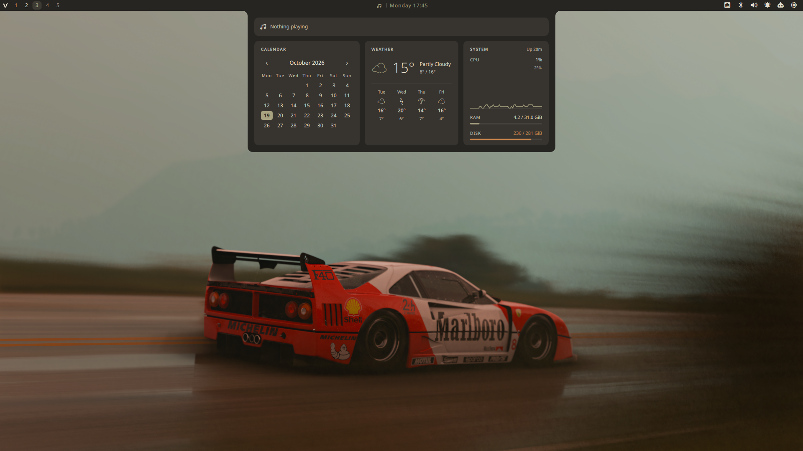
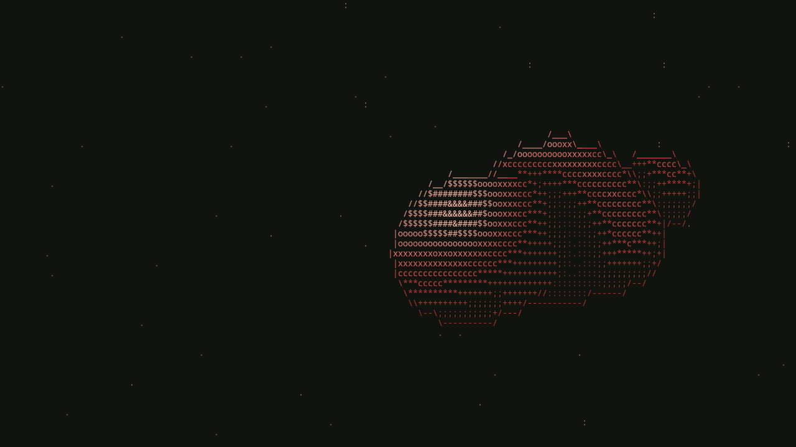
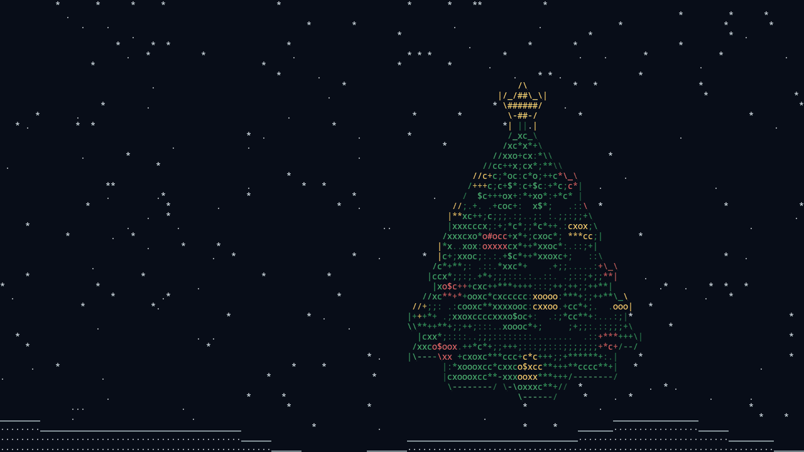
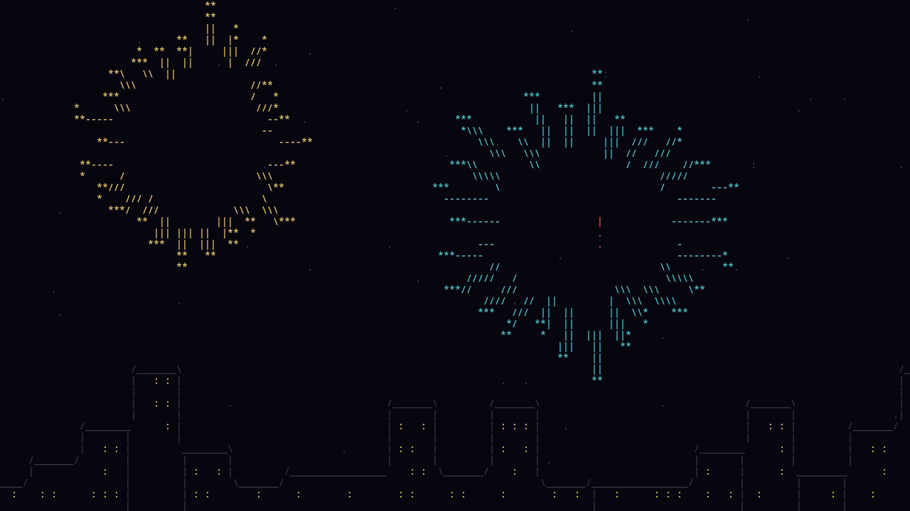
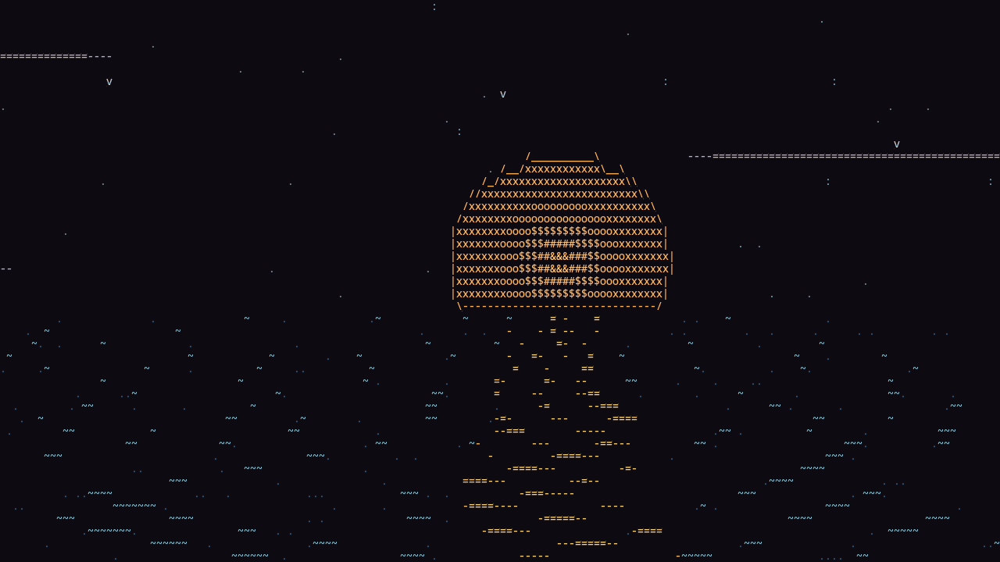
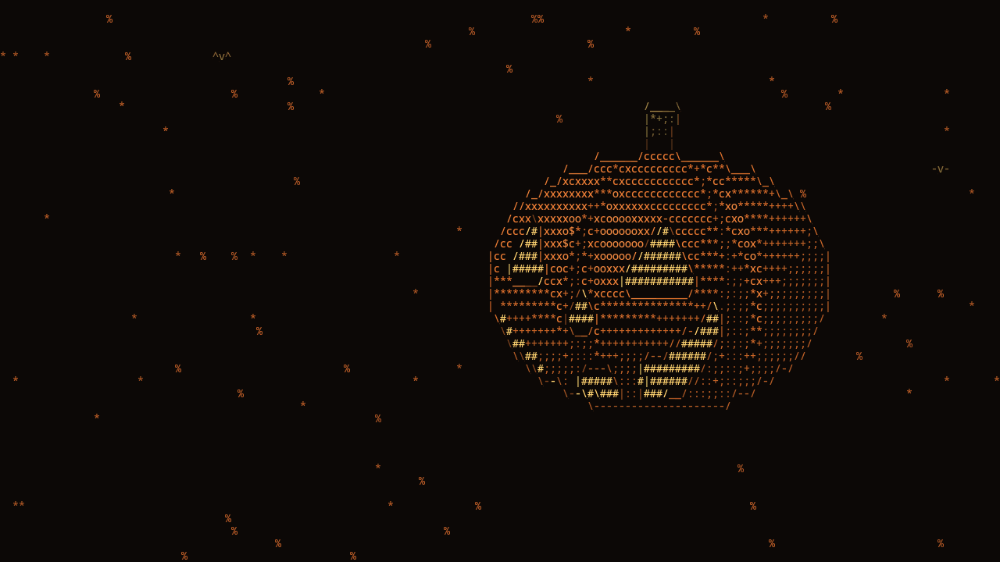
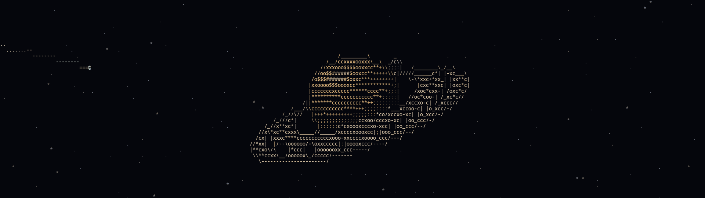

Launcher
One field searches applications, shell actions and emoji, ranks results by frecency and evaluates anything that looks like maths. > switches to projects.
Quickshell · Hyprland
An ink-inspired desktop shell: a multi-monitor top bar, launcher, notification centre, media dashboard, system controls and a Wayland lock screen, all coloured by one palette.
Sumi on Vellum
The Folded Paper Ensemble
Calendar
Weather
System Up 20m
CPU4%
RAM4.2 / 31.0 GiB
Disk236 / 281 GiB
Features
Every overlay opens on the focused monitor and closes the others. Popups are loaded on demand, so nothing costs memory until it is used.
One field searches applications, shell actions and emoji, ranks results by frecency and evaluates anything that looks like maths. > switches to projects.
Toasts, actions and history grouped per application with unread counts. History and Do Not Disturb survive a shell restart.
An album-art player above a calendar with Google Calendar events, Open-Meteo weather and live CPU, memory and disk.
Wallpapers and themes in a skewed carousel. Themes preview live on the running shell and are written out only when you press Enter.
A multi-monitor WlSessionLock with PAM that locks before suspend. The same QML runs as a greetd greeter.
A real window for displays with a 12-second auto-revert, tiling, input, sound, default apps, services, keybindings and a drag-and-drop bar editor.
Text and image entries recorded by the daemon, with pinning and previews. Anything a password manager marks as secret is never stored.
PipeWire mixer, NetworkManager with its own password dialog, Bluetooth, VPN, removable drives, Polkit agent and volume OSD.
One daemon speaking newline-delimited JSON over a Unix socket. Topics are lazy, so an idle daemon uses about 7 MB and no CPU.

Themes
A theme is a short theme.conf. Switching it recolours the shell and, in one transaction, GTK, Qt, kitty, btop, Neovim, Hyprland borders, Zen Browser, Fastfetch and the login screen.
Active theme
← → browse and preview · Enter or click keeps it · Esc restores
Screensaver
After a chosen idle time every monitor gets an ASCII scene, picked by hand or by season. It costs nothing until it starts and steps aside for the lock screen.






Previews play about three times faster than real time.
Install
The setup checks every prerequisite first and stops before touching the system if something is missing. --dry-run prints the plan without changing anything.
Shell
git clone https://github.com/cucu0628/vellum_shell.git \
"$HOME/.config/quickshell/vellum_shell"
cd "$HOME/.config/quickshell/vellum_shell"
./setup.sh --dry-run # show the plan
./setup.sh # install it
./setup.sh --with-greeter # optional: greetd login screenHyprland bindings
local shell = [[quickshell ipc --path "$HOME/.config/quickshell/vellum_shell/shell.qml" call]]
hl.bind("SUPER + SPACE", hl.dsp.exec_cmd(shell .. " launcher toggle"))
hl.bind("SUPER + V", hl.dsp.exec_cmd(shell .. " clipboard toggle"))
hl.bind("SUPER + N", hl.dsp.exec_cmd(shell .. " notifications toggle"))
hl.bind("SUPER + P", hl.dsp.exec_cmd(shell .. " settings toggle"))